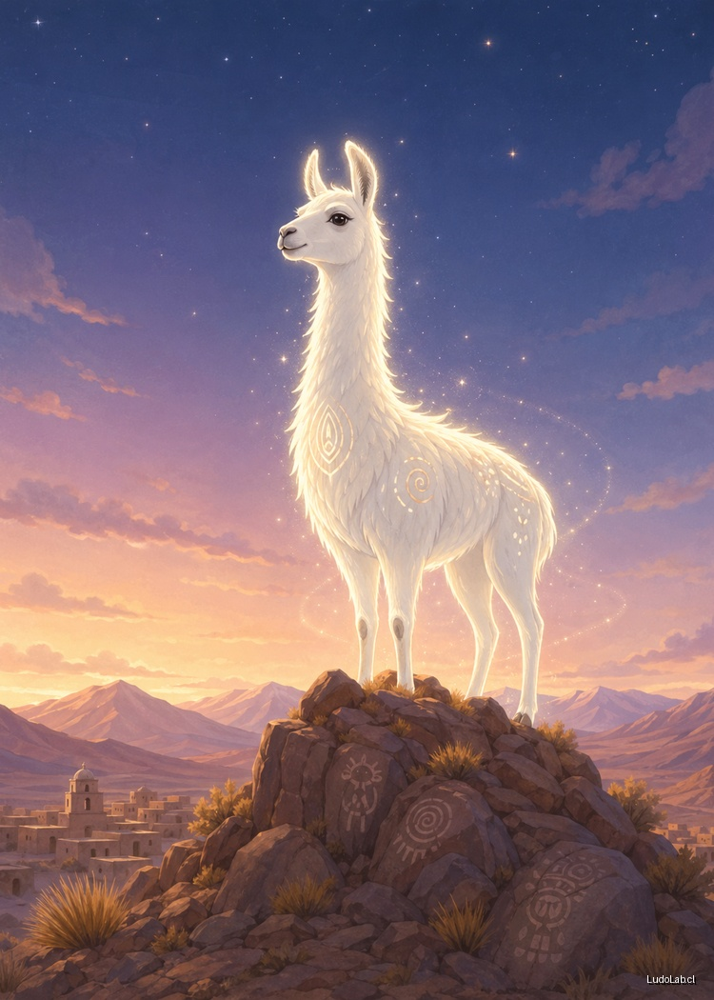

📍
Arica y Parinacota
Tarapacá / Antofagasta
Atacama / Coquimbo
Valparaíso / Santiago
O'Higgins / Maule
Ñuble / Biobío
Araucanía / Los Ríos
Los Lagos (Chiloé)
Aysén / Magallanes
Misterios de Chile
Investigación Ludolab
Selecciona tu ruta de inicio:
Desde el Norte 🌵
Desde el Sur ❄️

Cargando...
Esperando acción...
Resolver Misterio
Reiniciar